pacman::p_load(tidyverse, ggridges, ggdist, ggthemes, colorspace)04-1 Visualising Distribution
1 Overview
Visualising distributions has long been central to statistical analysis. In Chapter 1, we introduced common methods such as histograms, probability density curves (PDFs), boxplots, notch plots and violin plots using ggplot2. This chapter extends that discussion by introducing two more recent techniques: the ridgeline plot and the raincloud plot. The ridgeline plot, popularised through data journalism and the ggridges package, uses stacked density curves to compare distributions across groups. The raincloud plot, developed within the open science community, combines a density plot, boxplot and raw data points to provide a concise yet informative view of distributional characteristics.
2 Getting Started
2.1 Installing and Loading the Required Libraries
There are five packages that will be used in this exercise.
| Package | Description |
|---|---|
| tidyverse | A collection of R packages for data importing, cleaning, transformation, and visualisation (e.g., readr, dplyr, tidyr, ggplot2). |
| ggridges | A gglot extension that creates ridgeline plots to visualise the changes in distributions over time or space. |
| ggdist | An R package that extends ggplot2 with flexible geoms and stats for visualising distributions and uncertainty. |
| ggthemes | Provides ggplot2 themes, geoms and scales that replicate the famous styles ( e.g. Tufte, Economist, WSJ etc |
| colorspace | Provides tools for selecting, manipulating and applying colours and colour palettes in data visualisations. |
The code below installs and loads the required packages into R environment.
2.2 Importing the Data
A CSV file containing the final exam results of 322 local Primary 3 students has been imported into the R environment by using function read_csv() from readr package, one of tidyverse family. The dataset includes variables such as student ID, class, gender, race, and grades for English, Maths, and Science.
exam <- read_csv("data/Exam_data.csv")3 Visualising Distribution with Ridgeline Plot
A ridgeline plot, or joyplot, visualises the distribution of a numeric variable across multiple groups using aligned, overlapping density curves or histograms.
The code below creates a basic ridgeline plot using geom_density_ridges() andtheme_ridges() from ggridges package.
ggplot(exam, aes(x = ENGLISH, y = CLASS)) +
geom_density_ridges() +
theme_ridges()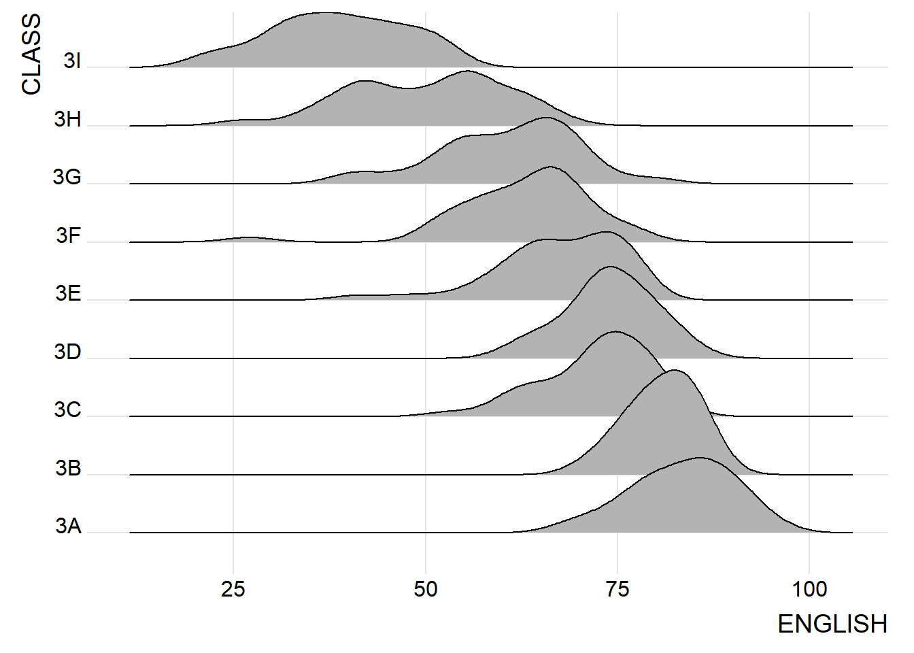
Note
Ridgeline plots are well suited for visualising a medium to large number of groups, where traditional faceted plots would require too much space. The overlapping of distributions allows for more efficient use of the plotting area. When there are less than 5 groups, alternative distribution plots are often more appropriate.
These plots work best when there is a clear pattern or natural ordering among groups. Without such structure, overlapping distributions may appear cluttered and provide limited insight.
There are several ways to create ridgeline plots in R. In this section, we learn how to produce ridgeline plots using the ggridges package.
The ggridges package provides three main geoms for ridgeline visualisation: geom_ridgeline(), geom_density_ridges(). The geom_ridgeline() function draws ridgelines using user supplied height values. In contrast, geom_density_ridges() first estimates the density of the data and then visualises these densities as ridgelines. The geom_density_ridges2() function is a newer variant that uses a different internal density calculation and stacking approach, making it more flexible and efficient when working with large datasets or when additional aesthetics such as quantile lines are required.
The code chunk below plots a ridgeline plot with simple colour by using geom_density_ridges().
SHOW
ggplot(exam, aes(x = ENGLISH, y = CLASS)) +
geom_density_ridges(scale = 3, # vertical spacing between ridgelines: how much overlap there is among the plots
rel_min_height = 0.01, # remove small density tails
bandwidth = 3.4, # set bandwidth
fill = lighten("#7097BB",0.3), # lighten blue colour
colour = "white") + # border colour
scale_x_continuous( # customise x-axis scale
name = "English Grades", # title for x-axis
expand = c(0, 0) # remove padding, makes the data start exactly at the axis
)+
scale_y_discrete( # customise the y-axis scale
name = NULL, # remove "CLASS" label
expand = expansion(add = c(0.2, 2.6)) # add extra space above the below the ridgelines
) +
theme_ridges() # ridgeline specific theme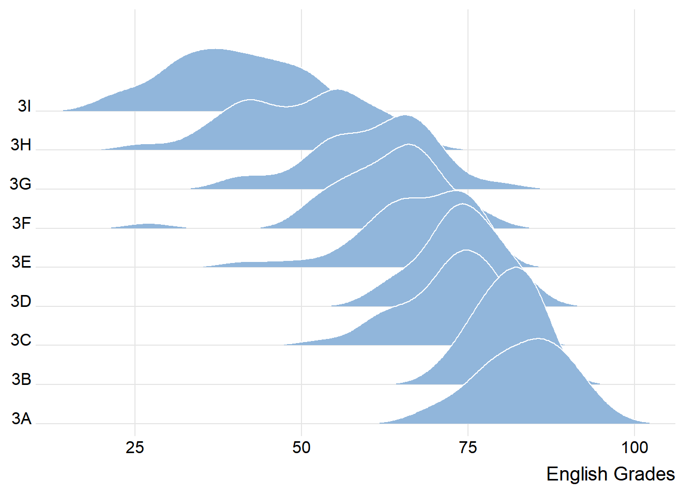
The code below uses geom_density_ridges2() to create the same chart and adds a title using the labs() function with the title argument.
SHOW
ggplot(exam, aes(x = ENGLISH, y = CLASS)) +
geom_density_ridges2(scale = 3, # vertical spacing between ridgelines: how much overlap there is among the plots
rel_min_height = 0.01, # remove small density tails
bandwidth = 3.4, # set bandwidth
fill = lighten("#7097BB",0.3), # lighten blue colour
colour = "white") + # border colour
scale_x_continuous( # customise x-axis scale
name = "English Grades", # title for x-axis
expand = c(0, 0) # remove padding, makes the data start exactly at the axis
)+
scale_y_discrete( # customise the y-axis scale
name = NULL, # remove "CLASS" label
expand = expansion(add = c(0.2, 2.6)) # add extra space above the below the ridgelines
) +
labs(
title = "Distribution of English Grades by Class" # add chart title
) +
theme_ridges() # ridgeline specific theme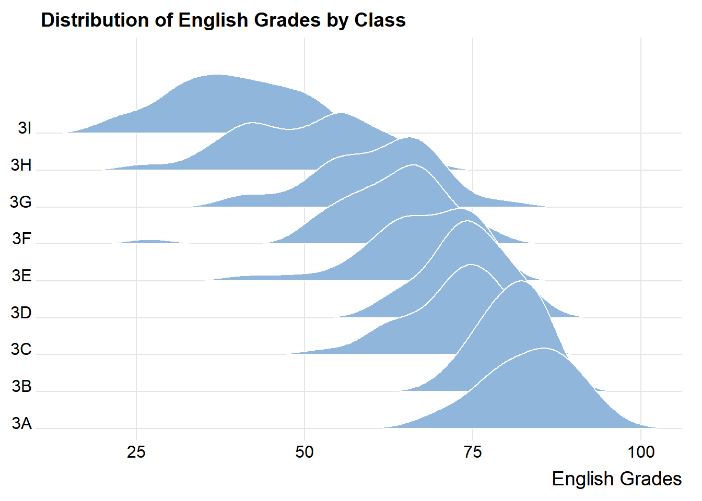
To use geom_ridgeline() to create a slimiar plot, we first manually calculate the ridge heights and pass the density values to the height arugment in the function. This approach is less straight-forward.
SHOW
density_data <- exam %>%
group_by(CLASS) %>% # Group the data by class
do({ # Perform operations within each class
d <- density(.$ENGLISH, bw = 3.4) # Estimate density of English scores
data.frame(
ENGLISH = d$x, # Density x values (English grades)
height = d$y # Density y values used as ridge heights
)})
ggplot(density_data,
aes(x = ENGLISH,
y = CLASS,
height = height)) + # Use precomputed density as ridge height
geom_ridgeline(
scale = 30,
fill = lighten("#7097BB", .3),
color = "white"
) +
scale_x_continuous(
name = "English grades",
expand = c(0, 0)
) +
scale_y_discrete(
name = NULL,
expand = expansion(add = c(0.2, 2.6))
) +
labs(
title = "Distribution of English Grades by Class"
) +
theme_ridges()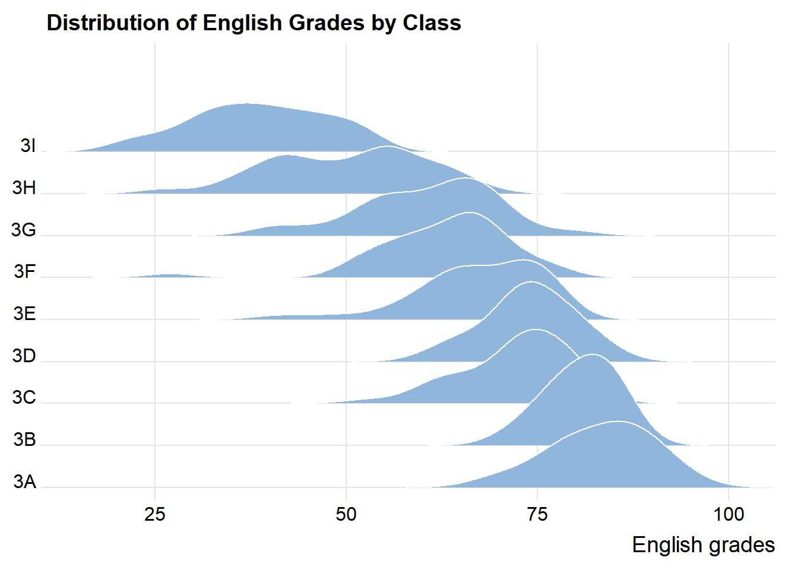
Sometimes it is useful to apply a gradient fill to ridgeline plots so that colours vary along the x axis. This can be done using geom_ridgeline_gradient() or geom_density_ridges_gradient(), which work like their non gradient counterparts but allow changing fill colours. However, these geoms do not support alpha transparency, as gradient fills and transparency cannot be used together.
SHOW
ggplot(exam, aes(x = ENGLISH, y = CLASS, fill = stat(x))) + #maps the fill colour to the x axis values computed by the statistical transformation
geom_density_ridges_gradient(scale = 3, rel_min_height = 0.01) +
scale_fill_viridis_c(name = "English Grades", option = "C") +
scale_x_continuous(name = "English grades", expand = c(0, 0)) +
scale_y_discrete(name = NULL, expand = expansion(add = c(0.2, 2.6)))+
labs(title = "Distribution of English Grades by Class") +
theme_ridges()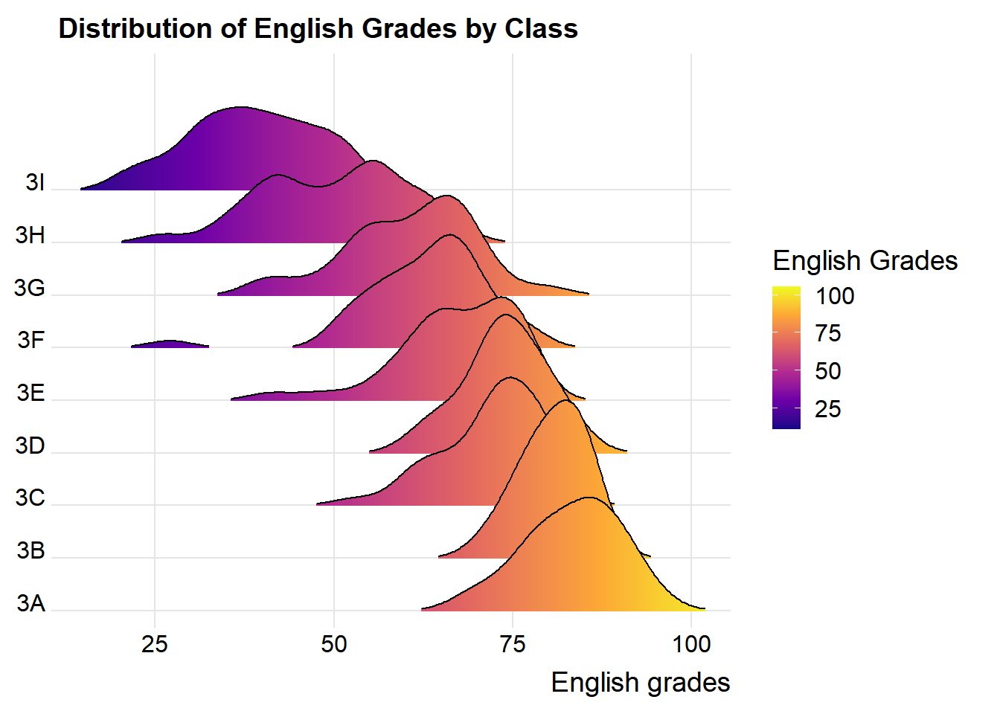
The code below use the geom_ridgeline_graident() to create a similar plot with the reversed Viridis colour scale by using arugment direction = -1.
SHOW
ggplot(density_data,aes(x = ENGLISH,y = CLASS,height = height, fill = stat(x))) +
geom_ridgeline_gradient(scale = 30) +
scale_fill_viridis_c(name = "English grades", option = "H", direction = -1) +
scale_x_continuous( name = "English grades",expand = c(0, 0)) +
scale_y_discrete(name = NULL,expand = expansion(add = c(0.2, 2.6))) +
labs(title = "Distribution of English Grades by Class") +
theme_ridges()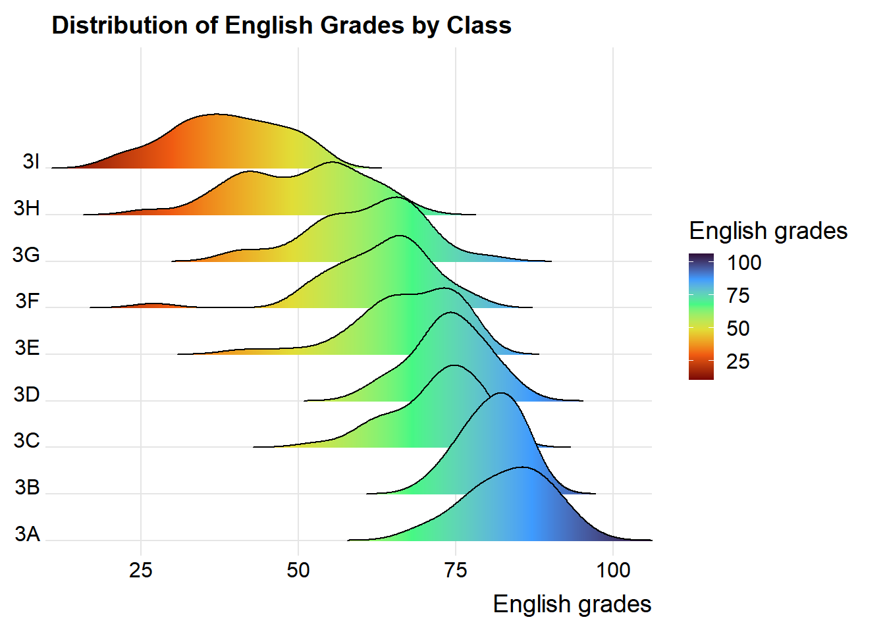
Tip
scale_fill_viridis_c() maps values continuously
scale_fill_viridis_b() maps categories
scale_fill_viridis_b() maps continuous data after binning it into discrete intervals.
option: indicates the 8 colour map option to use, which are: “magma” (or “A”), “inferno” (or “B”), “plasma” (or “C”), “viridis” (or “D”), “cividis” (or “E”), “rocket” (or “F”), “mako” (or “G”), “turbo” (or “H”).
In addition to providing specialised geoms for ridgeline plots, the ggridges package also includes a statistical function, stat_density_ridges(), which serves as an alternative to ggplot2’s stat_density(). The stat_density() function estimates the probability density function of a continuous variable from raw data using kernel density estimation.
The figure below is created by mapping probabilities computed using stat(ecdf), which represent the empirical cumulative distribution function of English scores.
The code below create a ridgeline plot by using stat_density_ridges().
When stat(ecdf) is close to 0 or 1, the observation lies in the tails of the distribution. When stat(ecdf) is close to 0.5, the observation lies near the centre of the distribution.
The fill aesthetic, defined as 0.5 - abs(0.5 - stat(ecdf)), assigns higher values to observations near the centre of the distribution and lower values toward the tails. The gradient colour emphasises how extreme values are distributed within each class.
SHOW
ggplot(exam, aes(x = ENGLISH, y = CLASS, fill = 0.5 - abs(0.5 -stat(ecdf)))) +
stat_density_ridges(geom = "density_ridges_gradient", calc_ecdf = TRUE)+
scale_fill_viridis_c(name = "Tail probability", direction = -1) +
scale_x_continuous(name = "English grades", expand = c(0, 0)) +
scale_y_discrete(name = NULL, expand = expansion(add = c(0.2, 2.6)))+
labs(title = "Distribution of English Grades by Class") +
theme_ridges()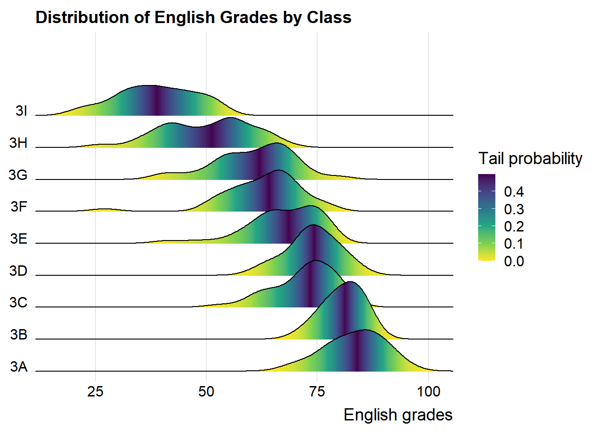
It is important include the argument calc_ecdf = TRUE in stat_density_ridges().
Using geom_density_ridges_gradient(), ridgeline plots can be coloured by quantiles through the calculated stat(quantile) aesthetic, as illustrated in the figure below. The stat(quantile) value indicates the quantile position of each x value within the distribution.
SHOW
ggplot(exam, aes(x = ENGLISH, y = CLASS,
fill = factor(stat(quantile)))) + # colour ridgelines by quantile group
stat_density_ridges(geom = "density_ridges_gradient", calc_ecdf = TRUE,
quantiles = 4, quantile_lines = TRUE)+ # four quantiles + vertical lines
scale_fill_viridis_d(name = "Quartiles", direction = -1) + #_d for categorical data
scale_x_continuous(name = "English grades", expand = c(0, 0)) +
scale_y_discrete(name = NULL, expand = expansion(add = c(0.2, 2.6)))+
labs(title = "Distribution of English Grades by Class") +
theme_ridges()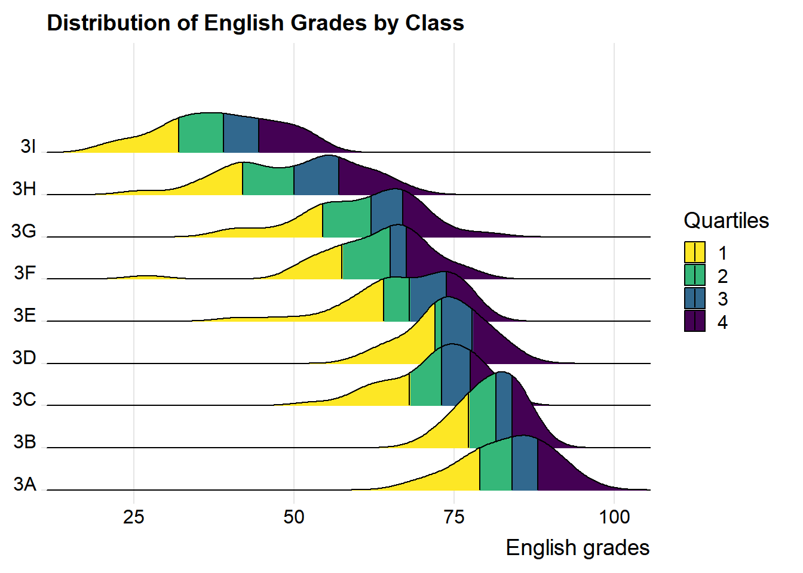
Instead of defining quantiles by a fixed number, they can also be specified using cut points, such as the 2.5% and 97.5% tails, to colour the ridgeline plot, as shown in the figure below.
SHOW
ggplot(exam, aes(x = ENGLISH, y = CLASS,
fill = factor(stat(quantile)))) +
stat_density_ridges(geom = "density_ridges_gradient", calc_ecdf = TRUE,
quantiles = c(0.025, 0.975))+
scale_fill_manual(name = "Probablity",
values = c("#FF0000A0", "#A0A0A0A0", "#0000FFA0"),
# manual colours for lower tail, middle, upper tail
labels = c("(0, 0.025]", "(0.025, 0.975]", "(0.975, 1]"))+# custom labels for thd regions
scale_x_continuous(name = "English grades", expand = c(0, 0)) +
scale_y_discrete(name = NULL, expand = expansion(add = c(0.2, 2.6)))+
labs(title = "Distribution of English Grades by Class") +
theme_ridges()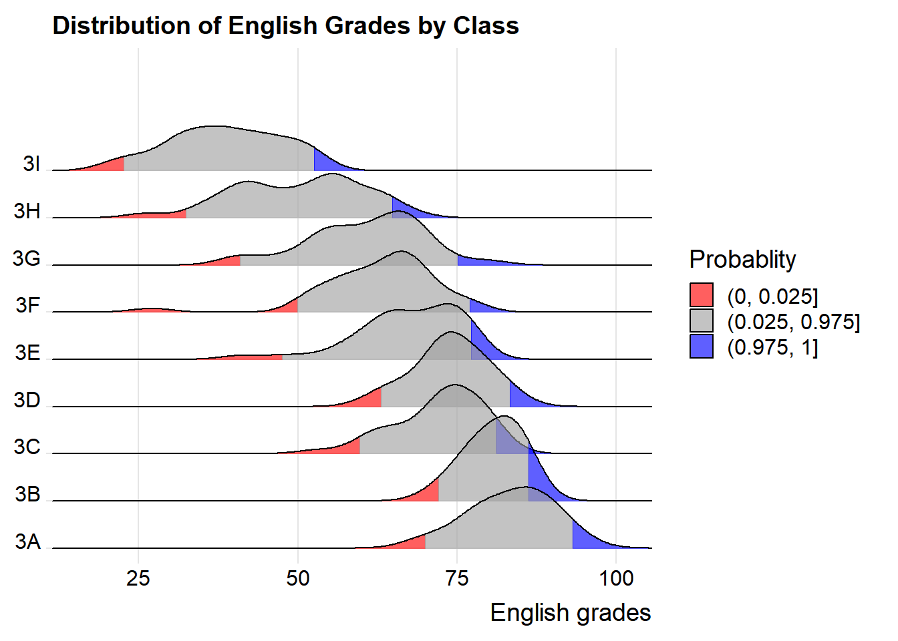
4 Visualising Distribution with Raincloud Plot
A raincloud plot visualises a distribution using a half density plot shaped like a “raincloud”. It extends the boxplot by revealing distributional features such as clustering and multiple modes that boxplots cannot show.
In this section, we learn how to create a raincloud plot to visualise the distribution of English scores by race using ggdist and ggplot2.
First, we plot a Half-Eye graph by using stat_halfeye() of ggdist package.
This produces a Half Eye visualisation, which is contains a half-density and a slab-interval.
A half-density is one side of a density curve that shows the shape of a distribution in a compact form.
A slab-interval combines a density slab with an interval summary, such as a confidence or credible interval, to show both distribution and uncertainty together.
The code below creates an animated visualisation using gifski package showing how the half-eye plot changes as key features (density smoothness, position, interval, and summary point) are adjusted.
SHOW
# Load packages
library(gifski)
p1 <- ggplot(exam, aes(RACE, ENGLISH)) +
stat_halfeye() +
ggtitle("Basic half-eye")
p2 <- ggplot(exam, aes(RACE, ENGLISH)) +
stat_halfeye(adjust = 0.5) +
ggtitle("Detailed (adjust = 0.5)")
p3 <- ggplot(exam, aes(RACE, ENGLISH)) +
stat_halfeye(adjust = 0.5, justification = -0.2) +
ggtitle("Shifted (justification = -0.2)")
p4 <- ggplot(exam, aes(RACE, ENGLISH)) +
stat_halfeye(adjust = 0.5, justification = -0.2, .width = 0) +
ggtitle("No interval (.width = 0)")
p5 <- ggplot(exam, aes(RACE, ENGLISH)) +
stat_halfeye(adjust = 0.5, justification = -0.2, .width = 0,
point_colour = NA) +
ggtitle("Density only")
plots <- list(p1, p2, p3, p4, p5)
# create temporary PNG file names
temp_png <- sapply(1:5, function(i) {
tempfile(fileext = ".png")})
# save each plot as a PNG image
for (i in 1:5) {
png(temp_png[i], width = 800, height = 500)
print(plots[[i]])
dev.off()}
# reads the list into gif (2 seconds per plot)
gifski(temp_png, "halfeye_demo.gif", delay = 2)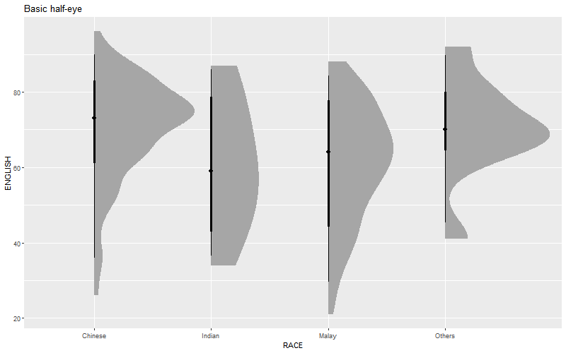
# basic half-eye
ggplot(exam, aes(x = RACE, y = ENGLISH))+ stat_halfeye()
# reduce bandwidth of the density estimate to show more detailed
ggplot(exam, aes(x = RACE, y = ENGLISH))+ stat_halfeye(adjust = 0.5)
# shift the slab interval sideways
ggplot(exam, aes(x = RACE, y = ENGLISH))+ stat_halfeye(adjust = 0.5, justification= -0.2)
# remove the interval
ggplot(exam, aes(x = RACE, y = ENGLISH))+ stat_halfeye(adjust = 0.5, justification= -0.2,.width = 0)
# remove the summary point
ggplot(exam, aes(x = RACE, y = ENGLISH))+ stat_halfeye(adjust = 0.5, justification= -0.2,.width = 0, point_colour = NA)Next, we add a second geometry layer using geom_boxplot() from ggplot2. This overlays a narrow boxplot, with its width reduced and opacity adjusted to keep the distribution visible underneath.
SHOW
ggplot(exam, aes(x = RACE, y = ENGLISH))+
stat_halfeye(adjust = 0.5, justification= -0.2,.width = 0, point_colour = NA) +
geom_boxplot(width = 0.2, outlier.shape = NA, alpha = 0.4)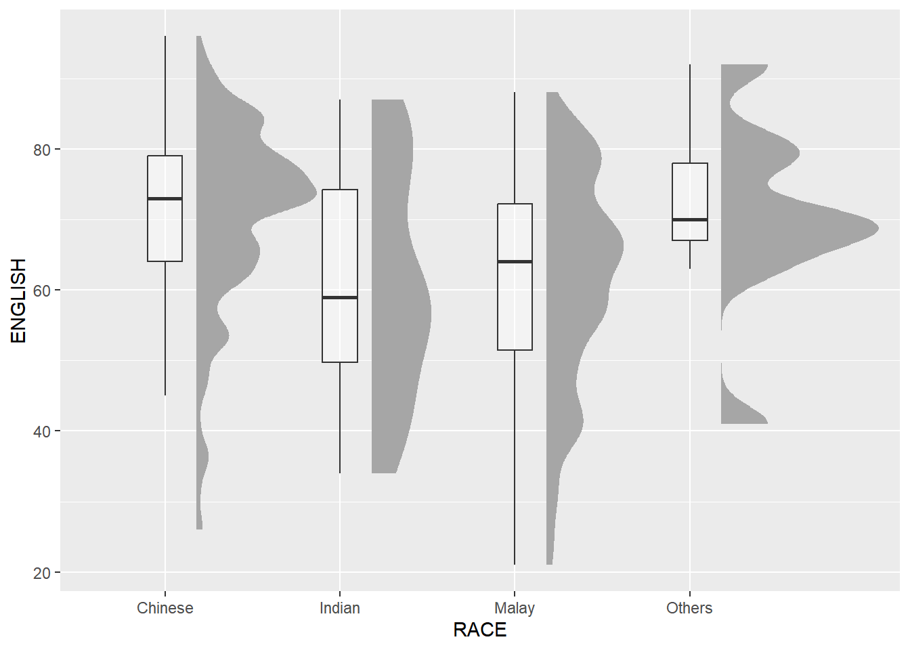
Next, we add a third layer usingstat_dots() from the ggdist package. This draws a half dot plot, which works like a histogram but uses dots instead of bars. Each dot represents data points in a bin. Setting side = "left" places the dots on the left side of the plot.
SHOW
ggplot(exam, aes(x = RACE, y = ENGLISH))+
stat_halfeye(adjust = 0.5, justification= -0.2,.width = 0, point_colour = NA) +
geom_boxplot(width = 0.2, outlier.shape = NA, alpha = 0.4) +
stat_dots(side = "left", justification = 1.2, binwidth = 0.5, dotsize = 2)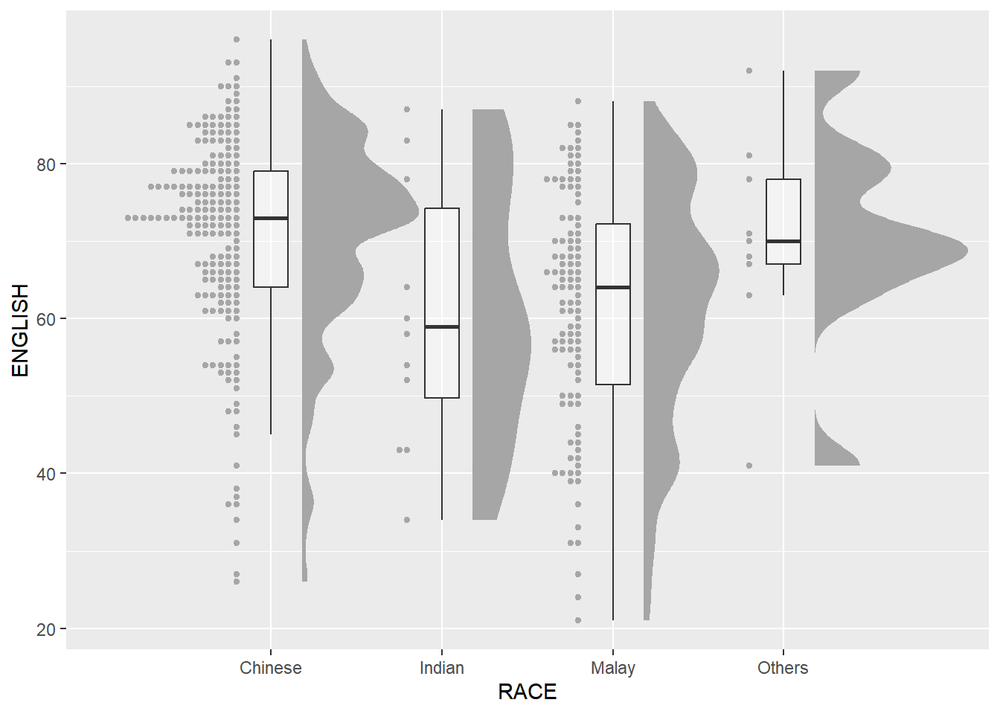
Lastly, we use coord_flip() from ggplot2 to turn the plot sideways, which gives the chart its raincloud look. We also apply theme_economist() from the ggthemes package to make the chart look clean and professional.
SHOW
ggplot(exam, aes(x = RACE, y = ENGLISH))+
stat_halfeye(adjust = 0.5, justification= -0.2,.width = 0, point_colour = NA) +
geom_boxplot(width = 0.2, outlier.shape = NA, alpha = 0.4) +
stat_dots(side = "left", justification = 1.2, binwidth = 0.5,
dotsize = 1.5,
overflow = "compress") +
coord_flip() +
labs(title = "Distribution of English Grades by Race",
x = "Race",
y = "English grades") +
theme_economist() +
theme(axis.title.x = element_text(margin = margin(t = 6)),
axis.title.y = element_text(margin = margin(r = 6)))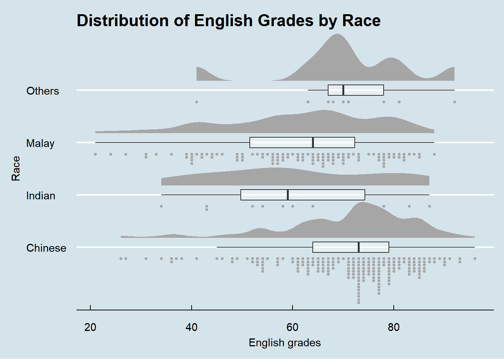
We can also add a gradient colour to the raincloud plot by mapping the fill aesthetic to the data values using aes(fill = stat(y)).
SHOW
ggplot(exam, aes(x = RACE, y = ENGLISH))+
stat_halfeye(aes(fill = stat(y)),adjust = 0.5, justification= -0.2,.width = 0, point_colour = NA) + # gradient mapped to English scores
geom_boxplot(width = 0.2, outlier.shape = NA, alpha = 0.4) +
stat_dots(side = "left", justification = 1.2, binwidth = 0.5,
dotsize = 1.5,
overflow = "compress") +
coord_flip() +
scale_fill_viridis_c(name = "English grades",direction = -1) +
labs(title = "Distribution of English Grades by Race",
x = "Race",
y = "English grades") +
theme_economist() +
theme(axis.title.x = element_text(margin = margin(t = 6)),
axis.title.y = element_text(margin = margin(r = 6)))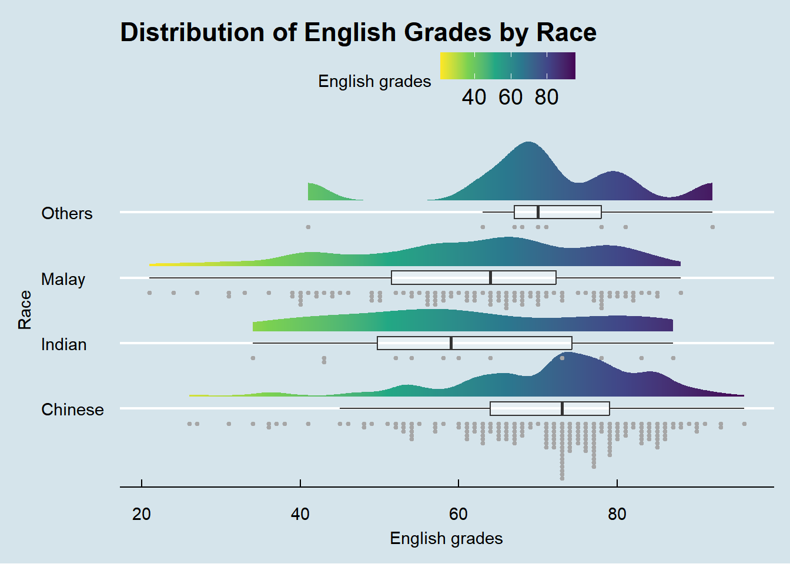
adjustinstat_halfeye()controls the smoothness of the density curve. Smaller values make the curve more detailed and wiggly. Larger values make it smoother.justification = -0.2instat_halfeye()nudges the half-density slightly to the rightjustification = 1.2instat_dots()pushes the dots further to the left (becauseside = "left")overflowinstat_dots()control the overflows. whencompressis stated, the dots are squeezed closer together so that they stay inside the plot area. Usekeepif we do not mind dots spilling outside the plot area, which is rarely desirable in practice.Use
theme(axis.title.* = margin())for label spacing. Specifically, t = top,r = right ,b = bottom,l = left
5 Reference
Kam, Tin Seong (2026). 9 Visualising Distribution R for Visual Analytics.
Claus O. Wilke Fundamentals of Data Visualization especially Chapter 6, 7, 8, 9 and 10.
Allen M, Poggiali D, Whitaker K et al. “Raincloud plots: a multi-platform tool for robust data. visualization” [version 2; peer review: 2 approved]. Welcome Open Res 2021, pp. 4:63.